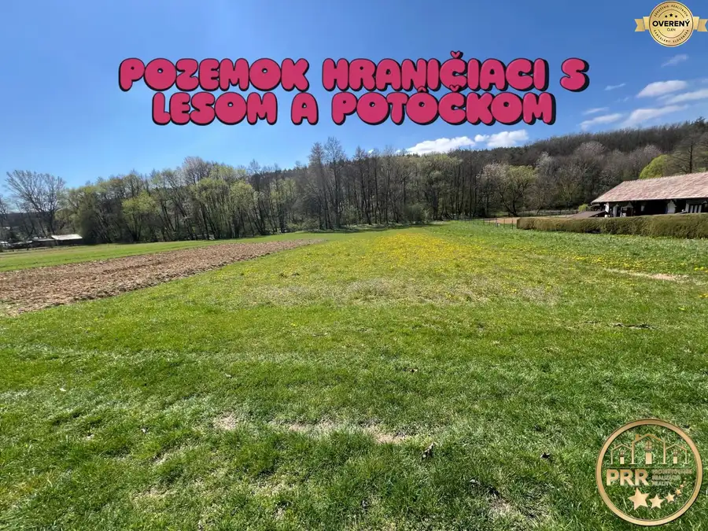
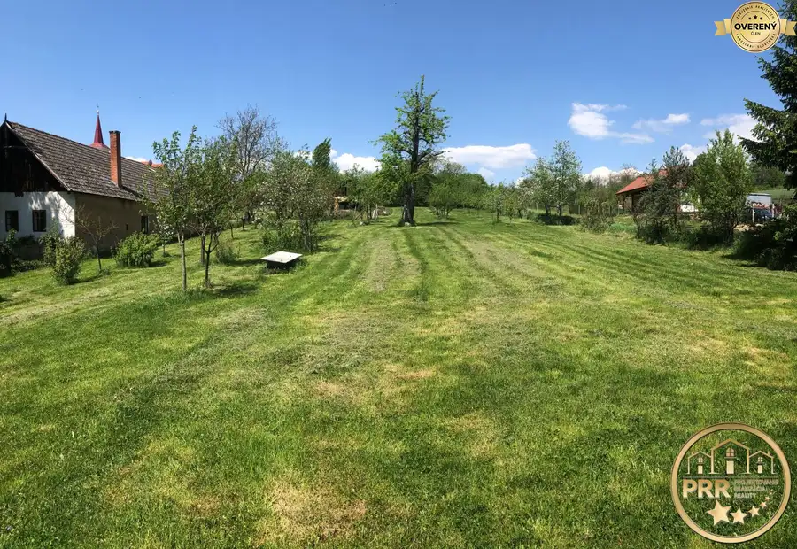
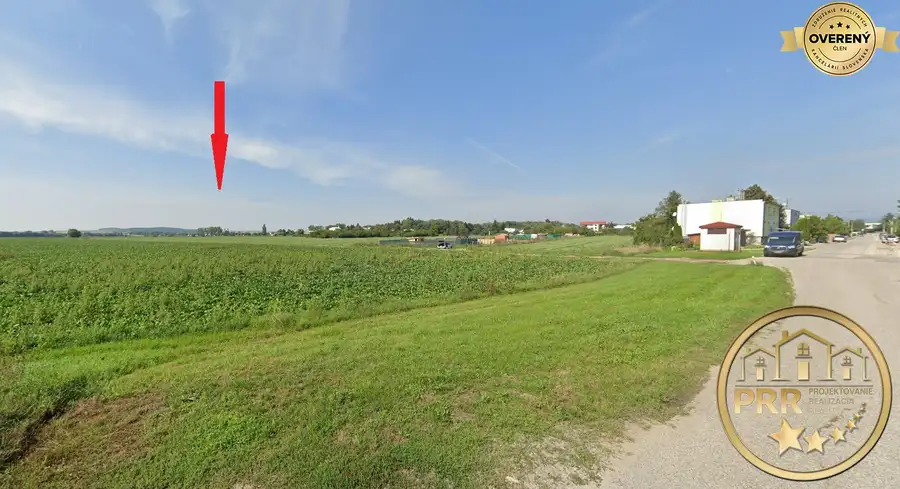

Záhradka 313 m² s murovanou podpivničenou chatkou+ELEKTRINA+VODA
Bánovce nad Bebravou
- Dispozícia1-izbový
- Plocha35 m²
- Poschodie0.
- Stavčiastočne prerobený
- Vlastníctvoosobné
O nehnuteľnosti
✔ Realitná kancelária ponúka na predaj záhradku s murovanou podpivničenou chatkou s prístavbou na rovinatom pozemku o výmere 313 m². Nachádza sa v príjemnom a pokojnom prostredí plnom zelene a stromov, s prístupom po upravenej komunikácii a možnosťou príchodu autom až k záhradke. Nehnuteľnosť je v osobnom vlastníctve, bez tiarch a bremien a kúpou je ihneď voľná.
✔ Chatka je kompletne zariadená a vybavená kuchynskou linkou, elektrickým sporákom s rúrou, sklokeramickou varnou doskou, odsávaním pár a dvomi chladničkami. Zavedená je elektrina a pitná voda zo studne. Studňa má nové čerpadlo a nový zásobník vody umiestnený v kuchyni. K dispozícii je teplá voda a menší bojler pod drezom.
Vykurovanie je riešené tuhým palivom aj naftou, vďaka čomu je možné chatku využívať aj počas chladnejšieho obdobia.
Po bočnej strane chatky sa nachádza splachovacie WC, vonku je k dispozícii aj ďalšie umývadlo s prívodom vody.
Pred chatkou na menšej vybetónovanej ploche sa nachádza záhradné sedenie, ktoré ponúka príjemné miesto na oddych a relax s rodinou či priateľmi
Súčasťou pozemku je aj „autobus“, ktorý bol na pozemok privezený s plánom vybudovania ďalších obytných alebo rekreačných priestorov. Do budúcna sa počítalo aj s možnosťou dotiahnutia vody a odpadu. Nový majiteľ tak získava priestor na ďalšie rozšírenie a úpravu nehnuteľnosti podľa vlastných predstáv a potrieb.
✔ Pozemok ponúka široké možnosti využitia – od klasického záhradkárčenia cez pestovanie vlastnej zeleniny a ovocia až po vytvorenie príjemného miesta na víkendový relax, grilovanie, posedenie a oddych v prírode. Nehnuteľnosť je možné postupne zveľaďovať podľa vlastných predstáv. Súčasťou prezentácie sú aj ilustračné vizualizácie možného budúceho využitia a úpravy priestoru.
✔ Hlavné výhody:
• pozemok 313 m²
• murovaná celopodpivničená chatka 22m2 + prístavba 15m2
• elektrina a voda zo studne
• nové čerpadlo a zásobník vody
• teplá voda + bojler
• kompletne vybavená kuchyňa + 2 chladničky
• WC + sprcha
• kúrenie na tuhé palivo aj naftu
• možnosť využitia aj v zime
• prístup autom až k pozemku
• pokojné prostredie plné zelene
• možnosť ďalšieho rozšírenia a úprav
• osobné vlastníctvo, bez tiarch a bremien
• ihneď k dispozícii
Cena: 34.990,-€
▶ CENA zahŕňa kompletný realitný a právny servis:
• províziu RK,
• prípravu kompletnej dokumentácie (rezervačná zmluva, kúpna zmluva, návrh na vklad do katastra),
• úhradu správneho poplatku za overenie podpisov a poplatku za vklad vlastníckeho práva,
• protokolárne odovzdanie nehnuteľnosti vrátane prepisu energií (elektrina, plyn, voda).
________________________________________
Zaujala Vás táto ponuka? Neváhajte nás kontaktovať pre dohodnutie obhliadky: Tel.: mail:
Kancelária: SNP 645/18, 957 01 Bánovce nad Bebravou
(Upozornenie: Kopírovanie textu, fotografií alebo vizualizácií bez písomného súhlasu realitnej kancelárie je porušením autorských práv.)
Parametre
| Rozloha pozemku | 313 m² |
|---|---|
| Zastavaná plocha | 22 m² |
| Celková rozloha | 313 m² |
| Úžitková plocha | 35 m² |
| Poschodie | prízemie |
| Počet izieb | 1 |
| Vlastníctvo | osobné |
| Stav | čiastočne prerobený |
| Voda | studňa |
| El. napätie | 230V |
| Plyn | nie |
| Kanalizácia | žumpa |
| Vykurovanie | vlastné |
| Pivnica | áno |
| Inžinierske siete | áno |
| Postavené z | tehla |
| Zariadenie | čiastočne |
| Zateplený objekt | nie |
| Strecha | pôvodná |
| Energetický certifikát | nie |
| Terén | rovina |
| Dátum zverejnenia | 11. 9. 2026 |
Kde to je
Mohlo by Vás zaujímať

Pozemok10 35 000 €Krásny pozemok pri lese 980m2 v obci M.Hoste okres Bánovce n/B.-predaj Malé Hoste 978 m² TICHÁ ČASŤ OBCE ► PRI LESE A POTÔČIKU ►SLEPÁ ULIČKA POSKYTUJÚCA SÚKROMIE ►OÁZA POKOJA ^_~ ODDYCHU ^_~ RELAXU ▶ !!! Kopírovanie textu, fotografií…
Pozemok10 115 000 €Krásny slnečný pozemok (cca 2816m2) v Dežericiach pri Bánovciach n/B. Dežerice 2816 m² ▶ !!! Kopírovanie textu, fotografií alebo vizualizácií bez písomného súhlasu realitnej kancelárie je porušením autorských práv. !!! ◀ ✔ V tichom…
Pozemok5 55 900 €ZNÍŽENÁ CENA ! rekreačný pozemok 2795m2 v lukratívnej časti Topoľčian Topoľčany 2795 m² ⨳⨳⨳ POZEMOK VHODNÝ NA ZÁHRADKY ■ CHATKY ■ OVOCNÝ SAD ⇒ VYHĽADÁVANÁ A TICHÁ ČASŤ MESTA ⨳⨳⨳ ✔ V lukratívnej časti mesta Topoľčany na Záhradníckej ulici…